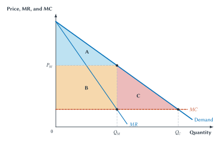

The Town’s Only Milk Processor
A farming town once had three businesses that bought raw milk from nearby farms, pasteurized and packaged it, and sold it to grocery stores. After years of falling demand and rising equipment costs, only one processor remains.
The surviving company is efficient. Its modern plant wastes less milk, uses less energy per gallon, and tests for contamination more reliably than the smaller plants it replaced. Running one plant near capacity may cost less than running three partially empty plants. Grocery stores value dependable delivery. Consumers value safety and a product that stays fresh.
The company is also powerful. It is the only nearby buyer equipped to handle the farmers’ raw milk. It supplies nearly every local grocery store. Retail milk prices have increased, payments to farmers have fallen, and several stores have signed contracts that make it difficult to carry a new processor’s product. The company says the price increase reflects fuel, labor, and safety costs. It says the store contracts justify investments in refrigerated delivery. Farmers and consumers see the same facts differently.
A town council member proposes breaking up the processor. Another proposes regulating its prices. A third wants to subsidize a new entrant. The company warns that dividing the plant would destroy scale economies and raise costs. A neighboring processor says it might enter if the town relaxed a licensing rule and stores made shelf space available. No one agrees on what counts as the relevant market. Is it packaged milk sold in town? All dairy products? Milk supplied within a two-hour drive? Does the processor compete with distant plants, private-label suppliers, plant-based drinks, or direct sales from farms?
The dispute cannot be resolved by observing that the company is large or that some rivals disappeared. It cannot be resolved by observing that the plant is efficient. At least five questions must be separated.
- What is the market? Which products, buyers, sellers, places, and time periods provide meaningful competitive alternatives?
- Does the company possess durable market power? Can it worsen terms without losing enough business to make the strategy unprofitable?
- What conduct or transaction is challenged? Growth, merger, exclusive contracts, licensing restrictions, predatory conduct, and an explicit cartel require different analysis.
- What is the mechanism of harm? Higher price, lower output, suppressed payments to farmers, blocked entry, and reduced quality are possible outcomes, but the analysis must explain how the challenged conduct produces them.
- What would a remedy improve? A breakup, access rule, injunction, damages award, new license, or decision to do nothing creates its own costs and risks.
These questions define the economic method of antitrust. Antitrust is law directed at the competitive process. It asks when agreements, mergers, or conduct create or preserve market power, and when intervention would instead punish efficient organization, low prices, product improvement, or ordinary success.
The field is difficult because the same visible practice can have competing explanations. A merger can eliminate rivalry and lower production costs. An exclusive contract can foreclose entrants and protect a relationship-specific investment. A free product can discipline an incumbent market and help a platform defend a bottleneck. A large firm can be the survivor of intense competition or the beneficiary of a legal privilege.
The right starting point is not “big is bad” or “antitrust usually harms.” It is mechanism, evidence, and institutional comparison.
What Competition Does
Competition is often described as a force that lowers price. That is important, but incomplete. Sellers can compete over output, quality, reliability, location, privacy, service, product design, innovation, and delivery speed. Employers can compete over wages, benefits, flexibility, training, and working conditions. Buyers can compete to obtain farm products, creative work, components, or access to scarce inputs.
Competition also produces information. A new entrant tests whether customers value a different product. A low-cost firm reveals that an incumbent’s production method is not necessary. A dissatisfied employee who can move to another employer communicates information through exit. Prices, profits, losses, entry, and switching help participants discover alternatives that no central decisionmaker needed to specify in advance.
This does not mean that every market is highly competitive. Search costs, scale economies, network effects, switching costs, regulation, control of bottlenecks, and strategic conduct can weaken rivalry. Nor does it mean that every rival must survive. Competition is a selection process. A firm that offers a better product or lower cost can gain customers and injure competitors.
That distinction is central to antitrust.
Suppose the milk processor develops a packaging method that lowers spoilage and takes customers from a less efficient rival. Protecting that rival would weaken competition. Suppose instead that the processor threatens stores with loss of all deliveries if they test an entrant’s milk, and the contracts block the only practical route to consumers. The rival’s injury may then be evidence of a broader mechanism that protects market power. The difference lies in how the business was won and what alternatives remain.
What Should Antitrust Protect?
Antitrust policy is often organized around consumer welfare: price, output, quality, choice, and innovation for buyers. That focus disciplines analysis by requiring an account of competitive effects rather than a simple objection to size.
Other concerns do not disappear. A merger among employers can suppress wages or worsen working conditions. A merger among agricultural buyers can reduce payments to farmers. A platform may charge consumers a zero monetary price while worsening privacy, quality, or terms for sellers. An exclusionary practice can affect future innovation before its effect appears in current prices.
Total-welfare analysis asks about gains and losses to all participants rather than only the buyer side. A competitive-process approach asks whether rivalry, entry, and decentralized choice remain effective. Broader traditions have also worried about concentrated private power, small-business independence, and political influence.
These objectives are related but not identical. A merger could lower production cost while raising consumer prices. A practice could benefit current consumers while weakening a future competitive threat. A labor-market restraint could leave product prices unchanged while reducing compensation. Labels alone do not resolve the tradeoffs.
For this chapter, the operational discipline is straightforward: identify a competitive-harm mechanism, identify any plausible productive benefit, specify the evidence that distinguishes them, and evaluate the feasible remedy. Broader objectives can remain visible without replacing analysis.
What Market Power Costs
A single seller facing no close substitutes does not take a market price as given. It chooses among price-quantity combinations along the demand curve. A higher price usually means fewer units sold. A lower price usually expands sales.
For a single-price seller, marginal revenue from another unit is below the price of that unit. Selling the additional unit requires lowering the price not only on the new unit but also on earlier units. The seller expands output while the marginal revenue from another unit exceeds its marginal cost and stops at the quantity where the two are equal.
The resulting quantity is below the competitive benchmark in the standard model. Some buyers who value the product above its marginal cost do not purchase it because the monopoly price is higher. Those unrealized transactions create deadweight loss.

Figure 14.1. Monopoly price, output, transfer, and deadweight loss. A single-price monopolist chooses
The distinction between B and C matters. The higher price transfers surplus from consumers to the producer on units that are still sold. Distribution may matter greatly, but a transfer is not automatically a loss of total surplus. Region C is different. It represents gains from trade that disappear because units valued above marginal cost are not produced.
Real cases are more complicated. Market power can reduce product quality rather than increase a posted price. An employer with buyer power can suppress wages and employment. A platform can charge zero on one side and increase fees on another. A firm may spend less on service or innovation when competitive pressure weakens. The diagram supplies a benchmark, not a complete list of harms.
Rent Seeking and Legal Privilege
The standard deadweight-loss triangle can also understate the social cost of monopoly. When monopoly returns are available, firms and organized groups may spend resources trying to obtain or preserve them. They may lobby for an exclusive license, litigate to delay entry, influence a standard, or seek a rule that raises rivals’ costs.
These efforts are rent seeking when resources are used to obtain a transfer or privilege rather than to create corresponding social value. If the town’s milk processor spends heavily to preserve a rule excluding qualified entrants, the resulting legal fees, political effort, and delayed investment can be additional costs. The monopoly return being sought is a transfer; the resources dissipated in seeking it are not.
Chapter 13 showed that regulation can create entry barriers as well as correct market failures. Antitrust and public choice therefore overlap. Private conduct may protect market power, but government can also grant or reinforce it.
Scale Economies and Natural Monopoly
High concentration can reflect cost conditions. If one milk plant can process the town’s entire output at much lower average cost than three smaller plants, dividing the plant may sacrifice scale economies. A water network, payment rail, or technical platform can present an even stronger version of the problem.
Natural-monopoly conditions do not eliminate concern about power. They change the institutional comparison. Rivalry inside the market, competition to obtain a franchise, price regulation, public ownership, cooperative ownership, access requirements, and periodic rebidding each create different information and incentive problems. Antitrust cannot make scale economies disappear.
The next task is therefore empirical and conceptual: identify where meaningful competitive constraints actually come from.
How Market Power Is Identified
Market power is always power with respect to something. A company is not a monopoly in the abstract. It may face strong competition in one product and weak competition in another, or strong competition today and little threat of entry tomorrow.
Substitution and the Relevant Market
A relevant market is an analytical frame for identifying practical substitutes and competitive constraints. It normally has a product dimension and a geographic dimension.
For the milk processor, product questions include whether consumers would switch from fresh milk to shelf-stable milk, other dairy products, or plant-based drinks if price increased modestly. Geographic questions include how far packaged milk can be shipped economically and how far farmers can transport raw milk before spoilage or transport cost becomes prohibitive.
The market can differ on each side of the same business. Consumers may have several beverage substitutes, while dairy farmers may have only one practical processor. A company could therefore face limited seller power over consumers but substantial buyer power over farmers.
Market definition should not be a ritual designed to produce a preferred share. Ask what customers would do, what suppliers could do, how quickly alternatives could expand, and which costs or contracts impede switching. Internal business records, customer behavior, capacity, transportation, bidding patterns, and past entry can be more informative than labels.
Shares, Concentration, and Direct Evidence
Market share and concentration can be useful screens. A firm with a small share usually cannot profitably worsen terms if customers can switch easily. A merger among the only two suppliers in a well-defined market deserves attention.
But a share does not prove durable power. A firm may hold a large current share because it introduced a superior product while rivals can expand rapidly. Another firm may hold a more modest share while controlling a bottleneck that entrants cannot bypass. Direct evidence of higher prices, reduced output, suppressed compensation, degraded quality, or exclusion can supplement structural measures.
Entry matters, but the word possible is not enough. Entry must be timely enough, likely enough, and sufficient enough to constrain the challenged conduct. A distant processor that would need four years, a new plant, multiple permits, and access to every grocery chain may not discipline today’s milk price. An existing plant with spare capacity and ordinary delivery access might.
Durability separates market power from temporary success. Profits can attract entry. Technology can destroy a bottleneck. Customers can coordinate migration to a new standard. Yet network effects, switching costs, accumulated data, control of complements, regulation, and long-term contracts can make power persist.
Consider a town with one hospital system employing most specialized nurses. The hospital may not literally be the only employer. Moving costs, licensing, family ties, job-specific training, and differences among workplaces can still make labor supply to the hospital relatively unresponsive. If the hospital lowers compensation, some nurses leave, but not enough to make the reduction unprofitable. The hospital has buyer power.
This is not the same as a wage-fixing agreement. Several employers that agree not to compete for nurses create a buyer cartel. A single employer that unilaterally faces weak worker alternatives presents a monopsony problem. Both can suppress compensation, but the conduct, legal theory, and remedy differ.
Old Statutes, Modern Economics, and the Legal Map
Federal antitrust law rests on short statutes written in broad language. Their terms do not reproduce a modern economics textbook. Courts and agencies have developed legal frameworks around agreements, monopolization, mergers, market definition, competitive effects, business justifications, and remedies.
Four provisions supply a principles-level map.
Sherman Act Section 1 addresses agreements that unreasonably restrain trade. Price fixing, wage fixing, bid rigging, and market allocation are the clearest examples.
Sherman Act Section 2 addresses monopolization and attempts to monopolize. Possessing monopoly power is not enough. The central concern is acquiring or maintaining power through exclusionary conduct rather than superior performance or ordinary competition.
Clayton Act Section 7 addresses mergers and acquisitions whose effect may substantially lessen competition or tend to create monopoly. Merger review is prospective. It asks what rivalry, entry, coordination, and efficiencies are likely after a transaction.
Federal Trade Commission Act Section 5 prohibits unfair methods of competition and supplies the FTC with a distinct enforcement authority. Its exact reach is a legal question beyond this chapter’s scope.
| Authority | Primary target | Core question | Clearest chapter example |
|---|---|---|---|
| Sherman Act Section 1 | Agreements that unreasonably restrain trade | Did separate actors agree to suppress rivalry? | Price fixing, wage fixing, bid rigging, or market allocation |
| Sherman Act Section 2 | Monopolization or attempted monopolization | Was durable power acquired or maintained through exclusion rather than competition on the merits? | Microsoft and the middleware threat |
| Clayton Act Section 7 | Mergers and acquisitions | May the transaction substantially lessen competition or tend to create monopoly? | JetBlue-Spirit |
| FTC Act Section 5 | Unfair methods of competition | Does the challenged method fall within the FTC’s statutory competition authority? | Enforcement supplement; no separate case study |
Table 14.1. A principles-level map of federal antitrust law. Each provision addresses a different category of conduct or transaction. The table organizes the chapter; it does not replace statutory text, case law, or jurisdiction-specific legal advice.
Per Se Rules and the Rule of Reason
Some agreements have such a predictable tendency to suppress rivalry and so little plausible productive purpose that courts treat them as unlawful without a full market-effects inquiry. Naked price fixing among competitors is the standard example. This is per se treatment.
Other restraints can either harm or support competition depending on their setting. A sports league must agree on rules and schedules to produce games. A technical standard can make products compatible. A distribution restraint can encourage retailer services or protect market power. These arrangements are generally analyzed through a more contextual rule of reason.
The distinction reflects error costs. A simple rule can deter and punish clear cartels without forcing courts to reconstruct an entire market. Applying the same rule to cooperation needed to create a product could destroy value. Legal categories try to direct detailed inquiry toward the situations in which competing explanations are material.
Modern welfare analysis has made antitrust more economically disciplined, but it does not map perfectly onto every concern surrounding the statutes’ enactment. One can favor economically coherent policy and still ask whether Congress should state modern objectives more explicitly.
Clearer legislation could improve democratic authorization and predictability. It could specify how price, output, innovation, workers, suppliers, and administrability should be weighed. It could also freeze concepts that markets soon outgrow or invite politically negotiated exceptions. Broad language permits adaptation but gives courts and agencies more responsibility for shaping policy. Chapter 13’s institutional lesson applies again: who should decide is part of the economic problem.
Cartels and Horizontal Restraints
Suppose four construction companies agree which one will submit the low bid for each town project. The designated winner submits a high bid. The others submit deliberately higher bids or decline to participate. They rotate the winning position and threaten to punish any member that undercuts the arrangement.
The companies have replaced competition with coordination. The town may observe several bids, but the bids no longer reveal independent costs or willingness to perform. Taxpayers pay more, projects may be delayed or reduced, and efficient outsiders may be excluded.
Cartel economics recalls Chapter 2’s prisoner’s dilemma. The firms can earn higher joint profit if all restrict competition. Each firm can often earn more in the short run by cheating: cutting price, winning extra customers, or secretly offering better terms. A successful cartel therefore needs ways to observe behavior, detect deviations, punish cheating, and exclude outsiders.
Repeated interaction can help. If firms expect to meet in many future bids, the loss of future cartel returns can make short-run cheating less attractive. Transparent prices, stable demand, similar products, frequent contact, and easy monitoring may support coordination. Rapid innovation, secret discounts, changing demand, many participants, and easy entry can destabilize it.
These conditions do not prove an unlawful agreement. Firms in a concentrated market can react independently to the same costs and demand. If every gas station observes a wholesale price increase, parallel retail increases need not reflect a conspiracy. The economic risk of coordination can still matter in merger analysis, but Section 1 requires an agreement rather than parallel conduct alone.
Buyer cartels follow the same logic. Employers that agree on wages or agree not to recruit one another’s workers suppress competition for labor. Competing purchasers that rig bids for farmers’ output suppress competition among buyers. The affected trading party changes; the coordination problem does not.
Not every horizontal agreement is a naked cartel. Competitors can pool research, create a payment standard, share a sports schedule, or jointly manufacture a product none could efficiently produce alone. The relevant question is whether the restraint helps create an integrated product or mainly suppresses rivalry that could remain.
Mergers
A cartel coordinates firms that remain legally separate. A merger changes ownership and organization. It can eliminate independent decisionmaking more completely, but it can also combine complementary assets, lower cost, improve management, and speed investment.
A horizontal merger joins firms that compete at the same stage. If the only two milk processors merge, a close competitive constraint disappears. The merged firm no longer fears losing sales from one plant to the other. It may raise price or reduce output unilaterally. Concentration can also make coordination among the remaining firms easier.
A vertical merger joins firms at different stages, such as a milk processor and a grocery distributor. Integration can reduce contracting costs, assure supply, coordinate investment, and eliminate double marginalization. It can also give the integrated firm control over an input or route to market needed by rivals.
Merger analysis is forward-looking. It asks several connected questions.
- How closely did the firms compete before the merger?
- What alternatives will customers, workers, or suppliers have afterward?
- Can existing rivals expand or new firms enter in time?
- Does the merger eliminate a potential or nascent competitive threat?
- Are claimed efficiencies credible, specific to the merger, and likely to affect the competitive outcome?
- Can a narrower transaction or remedy preserve the efficiencies without the competitive harm?
The Williamson Tradeoff
Oliver Williamson emphasized a basic economic tension. A merger can increase market power and reduce production cost at the same time.
Suppose lost rivalry reduces gains from trade by $12 million, while merger-specific production savings equal $15 million. A static total-surplus calculation produces a $3 million gain. If the savings are only $8 million, the same calculation produces a $4 million loss.
The arithmetic is easy. The real work is not. Are the savings verifiable? Could they be achieved by contract or a smaller transaction? Will entry replace the lost rivalry? Will lower costs reach consumers through lower prices or improved quality? Does the governing legal standard focus on harm in the affected market rather than a free-floating total-welfare gain elsewhere? What happens to innovation over time?
The numerical example supplies intuition, not a shortcut around evidence or law.
JetBlue and Spirit
JetBlue’s proposed acquisition of Spirit Airlines made the tradeoff unusually visible. Spirit was not simply another carrier with some market share. Its ultra-low-cost model and stripped-down fares exerted a distinctive competitive pressure on particular routes and travelers. The government’s case emphasized the loss of that head-to-head and disruptive rivalry.
The airlines offered a different account. They argued that a combined carrier could challenge the largest airlines more effectively, expand a higher-quality product, and achieve efficiencies unavailable to the separate firms. The case therefore presented two recognizable mechanisms: eliminating a distinctive low-fare rival versus creating a stronger challenger.
A federal district court blocked the acquisition in January 2024, and the parties terminated the agreement in March. The useful lesson is not that mergers in concentrated industries always fail. It is that market shares alone could not decide the case. The court examined the firms’ business models, route-level substitution, customer groups, likely entry, claimed efficiencies, and whether the transaction would preserve or eliminate a particular form of rivalry.
Merger law also illustrates institutional uncertainty. Enforcement agencies publish guidelines explaining how they analyze concentration, head-to-head rivalry, coordination, entry, platforms, and competing buyers. The guidelines structure enforcement but do not create an independent statute and do not bind courts. The legal rule, agency framework, economic model, and evidence must remain distinct.
Monopolization and Exclusion
This distinction protects both sides of competition. If monopoly status alone triggered punishment, firms would have weaker incentives to invent products, lower costs, or serve customers better. If every act by a dominant firm were treated as ordinary competition, control of a bottleneck could be used to disable the forces that might erode its power.
The economic problem is to distinguish competition on the merits from exclusion.
Exclusionary Mechanisms
An exclusionary practice makes actual or potential rivals less effective in a way that protects durable power rather than simply winning customers through better terms. Possible mechanisms include:
- exclusive contracts that deny rivals enough customers or inputs to reach viable scale
- tying that protects a bottleneck by limiting access to a complementary product
- control of compatibility information or interfaces needed for entry
- retaliation against distributors that carry a competitive threat
- acquisition of a nascent rival before it develops
- strategic use of regulation or licensing to raise rivals’ costs
- below-cost pricing that sacrifices current returns to drive out rivals and permits later recoupment
The list does not establish liability. Each practice can have another explanation. Exclusive contracts can assure supply or support investment. Integration can improve a product. A refusal to share an asset can preserve investment incentives. A low price ordinarily benefits consumers.
Predatory Pricing
Predatory-pricing stories are intuitively powerful. A large firm cuts price, smaller rivals disappear, and the firm later raises price. The story is incomplete unless the strategy is rational.
The alleged predator must sacrifice current profit by pricing below an appropriate measure of cost. It must then have a reasonable prospect of recouping those losses through later supracompetitive terms. If entry will occur as soon as price rises, or if the firm cannot preserve power long enough, the sacrifice does not make economic sense.
The demanding inquiry reflects an error-cost problem. Low prices are normally the result antitrust seeks. Calling a price predatory because a rival cannot match it would protect inefficient competitors at consumers’ expense. At the same time, below-cost sacrifice can be exclusionary when barriers make later recoupment plausible.
Government-Created Power
Exclusion can be public as well as private. An incumbent can lobby for a license that new firms cannot obtain, a technical rule tailored to its equipment, a ban on alternative business models, or an exclusive franchise. The resulting power may be enforced by government rather than by a private contract.
Return to the milk processor. If no entrant can satisfy a legitimate safety requirement, the barrier may reflect real cost. If a qualified neighboring processor is excluded by a rule written to preserve the incumbent, public choice and antitrust concerns converge. Diagnosing the source of power changes the remedy. Breaking up the incumbent may do little if the legal barrier remains.
Vertical Restraints and Productive Cooperation
Vertical arrangements connect different stages of production or distribution. Their effects are especially difficult to infer from form because coordination across stages can create value.
Integration and Double Marginalization
Suppose a manufacturer with market power sells to an independent retailer that also adds a markup. Each firm ignores how its markup reduces profit at the other stage. The combined price can be higher and output lower than an integrated firm would choose. Vertical integration can eliminate this double marginalization and benefit both the firm and consumers.
Integration can also coordinate quality, timing, inventory, and investment. A processor may build refrigerated trucks only if it can secure enough grocery distribution. A store may reserve shelf space only if delivery is reliable. Ownership or long-term contracts can solve a commitment problem.
The concern arises when control of one stage can deny rivals a critical input or outlet. The question is not whether the arrangement is vertical. It is whether rivals have realistic alternatives, how much of the market is foreclosed, how long commitments last, what investment they support, and how output, quality, price, and entry respond.
Resale Restrictions and Free Riding
A manufacturer may want retailers to demonstrate a complicated product, maintain trained staff, or provide attractive showrooms. A discount seller can free ride on those services. Customers inspect the product at the full-service retailer and then buy from the discounter. If service cannot be funded, it may disappear even when customers value it.
A resale-price or distribution restriction can preserve retailer margins and encourage service. The same restriction can also reduce price competition, support dealer coordination, or exclude a new distribution model. The showroom story is a mechanism to investigate, not a universal defense.
Tying and Metering
A seller ties products when access to one product is conditioned on obtaining another. An early business-machine example involved requiring users of a machine to purchase compatible cards or supplies. The arrangement could meter intensity of use, support price discrimination, protect quality, recover fixed cost, or simplify responsibility for malfunction.
It could also extend control from a bottleneck into a complementary market or deny scale to rival suppliers. Analysis requires asking whether the products have meaningful separate alternatives, how the tie changes usage and entry, and whether a less restrictive method could achieve the claimed benefit.
Cooperation That Creates the Product
A sports league cannot produce games unless teams agree on rules, schedules, eligibility, and some sharing arrangements. Technology firms can create compatibility only by agreeing on a standard. Banks can operate a payment network only by coordinating procedures.
Agreement is therefore not synonymous with harm. Some restraints make the product possible. Others go farther than production requires and suppress competition that could remain. The rule of reason exists partly because productive integration and harmful coordination can be intertwined.
| Category | Competitive-harm mechanism | Plausible efficiency or lawful explanation | Evidence that separates the stories | Remedy focus |
|---|---|---|---|---|
| Cartel or naked restraint | Rivals agree to suppress price, wages, output, customers, or bidding | Usually no integrated production requiring the restraint | Communications, bidding patterns, monitoring, punishment, and departures from independent incentives | Stop and deter the agreement |
| Merger | The transaction removes rivalry or raises coordination risk | Lower cost, better integration, or a stronger product | Substitution, head-to-head rivalry, entry, merger-specific efficiencies, and likely pass-through | Preserve rivalry or restructure the transaction |
| Monopolization | A firm protects durable power by impairing an actual or potential competitive constraint | Superior product, lower cost, integration, or ordinary competition for distribution | Power and durability, the threatened constraint, conduct, business justification, and less restrictive alternatives | Remove the exclusionary mechanism without punishing success |
| Vertical restraint | Control across stages forecloses inputs, outlets, or customers | Assured supply, investment, quality control, lower contracting cost, or reduced free riding | Share foreclosed, contract duration, alternatives, investment incentives, quality, and output | Restore access or rivalry while preserving efficiencies |
Table 14.2. A conduct diagnostic. The categories organize economic inquiry rather than state complete legal tests. Multiple mechanisms can coexist, and the remedy must respond to the mechanism supported by evidence.
Microsoft: Better Competition or Bottleneck Protection?
The Microsoft browser case is valuable because neither “dominant firm crushes rival” nor “government attacks innovation” captures it. The conduct produced immediate consumer benefits and raised a serious question about preserving an operating-system bottleneck.
The Operating-System Bottleneck
The historical case concerned operating systems for Intel-compatible personal computers. Windows benefited from an applications barrier to entry. Users preferred an operating system with many useful applications. Developers preferred to write for an operating system with many users. The feedback made entry difficult even if another operating system was technically capable.
Netscape’s Navigator browser and Sun’s Java technology posed an indirect threat. They were forms of middleware: software that could expose interfaces used by applications across different operating systems. If developers could write to middleware rather than directly to Windows, the stock of Windows applications might become less decisive. The browser was therefore not merely another application competing for current sales. It might weaken the mechanism protecting the operating-system monopoly.
Immediate Consumer Benefits
Microsoft responded aggressively. Internet Explorer was offered without a separate monetary price, improved rapidly, and integrated with Windows. Consumers received a browser as part of a product they already used. Browser rivalry accelerated features and distribution.
Those benefits matter. A theory that treats free distribution, product improvement, or integration as self-proving harm would invert the purpose of competition. Harm to Netscape was not enough.
The benefits also did not settle the case. Product improvement and exclusion can coexist. The question was whether Microsoft won browser use through a better offer or used control over Windows to impair a middleware threat in ways a browser competitor could not match on the merits.
Distribution and the Compaq Episode
Desktop placement was scarce and valuable. Computer manufacturers decided which icons, defaults, and promotions users would encounter. Browser firms competed for that distribution.
The district court found that Microsoft threatened Compaq’s Windows license unless Compaq restored specified Microsoft icons to the desktop. Microsoft later offered favorable terms for default, preferred, or exclusive Internet Explorer promotion. Netscape also supplied value to obtain distribution. These facts support two interpretations.
Benjamin Klein’s competition-on-the-merits account emphasized that giving away and improving Internet Explorer, integrating it into Windows, and paying for distribution can be vigorous competition. Firms routinely pay for scarce shelf space, defaults, advertising, and preferred placement. Under this view, antitrust risked converting hard competition into exclusion merely because a dominant firm competed effectively.
The government’s bottleneck account focused on leverage. A browser company could bid for placement with money or services. Microsoft could also make access to the dominant operating system depend on treatment of its browser. If that leverage impaired middleware capable of weakening the applications barrier, the conduct protected operating-system power rather than merely winning browser distribution.
The distinguishing question is counterfactual: what terms would have prevailed if Windows and Internet Explorer had been controlled independently? Ordinary payment for distribution could remain. The operating-system company would have less reason to sacrifice Windows licensing returns to protect an applications business from a platform threat.
Structure, Conduct, and Remedy
The district court initially ordered Microsoft divided into an operating-systems company and an applications company. The structural logic was economic. Separate ownership could remove the applications company’s incentive to protect Windows from middleware and remove the operating-system company’s incentive to favor one applications business.
The breakup was not implemented. The appellate court vacated the remedy, and the final judgment imposed conduct restrictions instead. Those restrictions addressed retaliation, licensing, defaults, and disclosure of technical information.
The contrast previews the remedy problem. Structural separation changes incentives and boundaries but can destroy integration and is difficult to reverse. A behavioral decree preserves the organization but requires courts and monitors to define discrimination, evaluate technical disclosures, update obligations, and respond to evasion. The second approach begins to resemble regulation.
Microsoft is therefore more than a technology case. It joins market definition, network effects, potential competition, vertical integration, exclusion, error costs, and institutional competence. It also warns against morality plays. A dominant firm can create real consumer value while engaging in some conduct that protects a bottleneck. Antitrust must disaggregate the acts rather than assign one character to the company.
Digital and AI Markets
Digital markets change the evidence and mechanisms of competition, but not the need for economic reasoning.
A multi-sided platform serves interdependent groups. A payment system needs merchants and cardholders. An app store needs developers and users. A search or social service may connect users, advertisers, publishers, and data suppliers. A change in participation or price on one side changes value on another.
The platform may charge zero on one side to attract participation and earn revenue elsewhere. Zero monetary price does not establish an absence of market power. Quality, privacy, attention, advertising load, seller fees, default placement, interoperability, and innovation may carry the competitive effect.
Network effects can make a service more valuable as participation grows. Switching costs can make departure expensive. Data can improve quality, attract users, and generate more data. These feedback loops can produce efficient scale and durable advantage. They do not by themselves prove exclusion. The analysis still asks what alternatives exist, whether users can multihome, whether data or interfaces can be reproduced, what prevents entry, and which conduct changes those constraints.
AI markets add linked layers: advanced chips, cloud infrastructure, compute, data, models, developer tools, and distribution. Scarcity at one layer can raise cost throughout the stack. Vertical integration can coordinate enormous investments and assure supply. It can also create a route for discriminatory access, tying, or foreclosure.
The right question is not whether AI infrastructure is concentrated. Scale economies may make concentration unsurprising. The questions are which bottleneck is durable, what competitive threat exists, what conduct impairs it, what efficiency the arrangement creates, and what remedy would preserve investment and innovation.
Algorithmic pricing presents another application. Software can make prices more responsive to demand and reduce decision cost. Shared algorithms or data channels can also facilitate coordination. Traditional cartel doctrine still requires attention to agreement. “An algorithm raised prices” is not a substitute for identifying who coordinated, what information was shared, and how the system altered independent incentives.
Chapter 15 will treat platforms as private rule systems and examine code, smart contracts, and AI agents more directly. Here the limited lesson is that new technology changes the form of bottlenecks and rivalry without repealing the old questions.
Remedies, Error Costs, and Institutional Limits
Finding a competitive problem does not complete the analysis. A remedy must change the relevant incentive or constraint without destroying more value than it preserves.
Antitrust errors run in two directions. A false positive condemns conduct that is beneficial or competitively neutral. It can deter low prices, integration, contracting, and innovation. A false negative permits harmful coordination or exclusion. It can allow a bottleneck to become durable and make later correction more difficult.
| Decision | Conduct is harmful to competition | Conduct is beneficial or competitively neutral |
|---|---|---|
| Intervene | Correct intervention: stop harm, subject to remedy and enforcement cost | False positive: deter low prices, integration, contracting, or innovation |
| Do not intervene | False negative: permit exclusion, coordination, or gatekeeping to become durable | Correct restraint: preserve beneficial conduct and avoid administrative cost |
Table 14.3. Antitrust error costs. The size, duration, reversibility, and detectability of an error matter more than simply counting errors. Technology can make premature intervention costly and delayed intervention difficult to reverse.
Error-cost analysis should not become a reason always to intervene or never to intervene. A pricing rule that mistakenly condemns ordinary discounts may generate recurring false positives. A decision to wait while an incumbent closes every route to a network market may create an irreversible false negative. Evidence, timing, legal clarity, and remedy feasibility determine which risk is larger in a particular setting.
Matching Remedy to Mechanism
A cartel injunction can order firms to stop communicating and punish future agreement. A merger can sometimes be blocked before assets are combined. Exclusion may require ending a contract, opening access, changing defaults, or separating businesses. Damages can deter and compensate after harm but may not recreate a competitive market.
| Remedy | Mechanism | Characteristic advantage | Characteristic implementation risk |
|---|---|---|---|
| Structural separation or divestiture | Change ownership or organizational boundaries | May remove the incentive and ability tied to the harmful structure | Valuation, lost integration, boundary design, and irreversibility |
| Behavioral restriction | Prohibit specified contracts or conduct | Can target the practice while preserving the firm and its integrations | Monitoring, evasion, technical change, and continuing judicial supervision |
| Access, portability, or interoperability | Open a bottleneck or reduce switching barriers | Can enable entry without breaking up the incumbent | Pricing, security, quality, updating, and regulator dependence |
| Damages and private enforcement | Make harmful conduct costly after the fact | Uses decentralized plaintiffs and can compensate proven injury | Causation, measurement, litigation cost, and overdeterrence |
Table 14.4. Antitrust remedies and implementation risks. A remedy should address the mechanism supported by evidence. Every remedy changes incentives and requires information; none is a costless instruction to “restore competition.”
Structural remedies can be attractive when common ownership creates the incentive and ability to exclude. They may reduce the need for continuing supervision. But legal separation does not guarantee economic independence, and a breakup can destroy useful integration, create new bargaining problems, or divide technology along unstable boundaries.
Behavioral remedies can be narrower. A court can prohibit retaliation, discriminatory contracts, or particular defaults. The price of precision is administration. The decree must define compliance, collect information, adapt to new technology, and distinguish evasion from innovation.
Access, portability, and interoperability rules can lower switching costs and open a bottleneck. They also require decisions about price, security, privacy, quality, capacity, and technical updating. The court or agency may become an ongoing manager of the interface.
This is the bridge back to Chapter 13. A behavioral antitrust remedy can become regulation through a decree. It faces the same dispersed information, capture, delay, authority, and revision problems as an agency rule. A court may be well positioned to adjudicate past conduct but poorly positioned to design a changing software interface. An agency may have technical expertise but face its own incentives and legal limits.
The final comparison is therefore institutional. Is the proposed remedy more likely to restore rivalry than to administer the market indefinitely? Can it be monitored? Can firms evade it? Will it preserve useful investment? What happens when technology changes? How does the remedy compare with entry, private contracting, regulation, or a decision not to intervene?
Antitrust is not a command to make every market look competitive. It is a legal technology for protecting rivalry under conditions in which both private power and public correction are imperfect.
Big Picture
Competition coordinates more than price. It disciplines output, quality, service, wages, supplier terms, innovation, and entry. It also produces information by letting firms, workers, suppliers, and consumers test alternatives. Successful competition can eliminate rivals, so injury to a competitor is not the same as injury to the competitive process.
Market power is the durable ability to worsen terms without losing enough business to make the strategy unprofitable. In the standard single-price monopoly model, restricted output creates deadweight loss because mutually beneficial units are not produced. The higher price also transfers surplus on units that remain. Rent seeking can add another social cost when resources are spent obtaining or defending monopoly privilege.
Power must be identified in a market. Product and geographic substitution, direct evidence, shares, concentration, entry, capacity, switching costs, network effects, and bottlenecks help identify the available constraints. A market label applies to a market, not to a company in the abstract. The same business can face strong rivalry in one activity and durable power in another.
Buyer power follows the same logic. Employers, processors, platforms, and other purchasers can worsen terms for workers and suppliers. A wage-fixing agreement among employers is a buyer cartel. Unilateral power held by a dominant employer is a monopsony problem. Similar outcomes do not imply the same conduct or remedy.
The federal legal map separates agreements, monopolization, mergers, and unfair methods of competition. Per se rules handle narrow categories of restraints with predictable anticompetitive effects. Rule-of-reason analysis handles practices with materially competing explanations. The broad statutes predate modern welfare language, leaving courts and agencies to incorporate economic analysis and leaving Congress with the option, and risk, of greater specificity.
Cartels seek the joint return from reduced rivalry but face cheating. Monitoring, repeated interaction, punishment, and entry affect their durability. Parallel conduct can arise without agreement. Cooperation can also create products, standards, networks, and leagues that would not otherwise exist.
Mergers can remove rivalry and create efficiencies. The Williamson tradeoff makes the tension visible but does not decide the legal result. JetBlue-Spirit showed why business models, customer substitution, entry, and merger-specific efficiencies matter more than a concentration label alone.
Monopolization is not monopoly status. The key distinction is between power gained or maintained through competition on the merits and power protected through exclusion. Low prices, integration, exclusive contracts, tying, and distribution payments can create value or impair competitive threats. An economic account must identify both stories and the evidence that separates them.
Microsoft brings the chapter together. Internet Explorer was free, improving, and widely distributed. Navigator also represented a middleware threat that might weaken the Windows applications barrier. Competition for distribution was real, and control of the operating-system bottleneck could supply leverage unavailable to an ordinary browser competitor. The case cannot be understood by counting harmed competitors or immediate consumer benefits alone.
Digital and AI markets preserve the framework while changing its application. Zero price, multi-sided participation, network effects, data, switching costs, chips, cloud, compute, and model distribution complicate measurement. They do not eliminate the need to identify substitution, durability, conduct, harm, efficiency, and remedy.
Finally, antitrust intervention is an institutional choice. False positives can deter low prices, integration, and innovation. False negatives can allow exclusion or coordination to harden. Structural remedies change ownership. Behavioral and access remedies require continuing administration. Damages act after harm. Every remedy needs information and creates incentives.
The central habit is diagnostic:
- define the competitive arena
- identify durable power
- specify the challenged conduct or transaction
- state the mechanism of harm
- state the strongest efficiency or competition-on-the-merits explanation
- identify evidence that distinguishes the stories
- compare remedies and error costs
The next chapter carries this framework into private digital governance. Platforms do not only compete in markets. They define rules, assign access, rank speech and trade, settle disputes, and increasingly delegate decisions to code and AI agents. Antitrust asks whether rivalry remains open. Platform governance asks how power is exercised within the system.
Chapter Study Map
- Core ideas: competition as price and nonprice rivalry, market power, monopoly output restriction, transfer versus deadweight loss, rent seeking, market definition, direct evidence, concentration, entry, durability, monopsony, buyer cartels, Sherman Act Sections 1 and 2, Clayton Act Section 7, FTC Act Section 5, per se rules, rule of reason, cartel stability, horizontal and vertical mergers, efficiencies, monopolization, exclusion, predatory pricing, vertical restraints, double marginalization, free riding, tying, productive cooperation, multi-sided platforms, error costs, and remedy design.
- Figure: use Figure 14.1 to identify monopoly quantity and price, distinguish regions A, B, and C, and explain why the diagram supplies an economic benchmark rather than an antitrust verdict.
- Tables and numerical example: use Table 14.1 to map federal antitrust provisions; use the $12 million loss and $15 million savings example to introduce the Williamson tradeoff; use Table 14.2 to compare competing explanations; use Table 14.3 to classify intervention errors; and use Table 14.4 to connect remedies to implementation risks.
- Central cases: use JetBlue-Spirit to analyze lost rivalry and merger-specific efficiencies; use Microsoft to compare competition for distribution with protection of an operating-system bottleneck and to compare structural with behavioral relief.
- Reasoning tasks: define the candidate market, identify durable power, distinguish harm to a competitor from harm to competition, separate agreement from parallel behavior, specify an exclusionary mechanism, construct an efficiency explanation, identify discriminating evidence, and match a feasible remedy to the mechanism.
- Common mistakes: treating size as proof of monopoly, treating monopoly as monopolization, treating every horizontal agreement as a cartel, treating every vertical arrangement as efficient or exclusionary, assuming low price proves predation, using concentration as the conclusion, treating guidelines as statutes, equating zero monetary price with no competitive harm, and discussing a remedy without its information and monitoring costs.
- Required applications: the town’s milk processor, a procurement cartel, a local labor market, the Williamson merger calculation, JetBlue-Spirit, exclusive dealing, resale services, tying, government-created entry barriers, productive cooperation, Microsoft, a zero-price platform, AI infrastructure, and structural versus behavioral remedies.
- Optional enrichment: formal HHI calculations, advanced oligopoly models, detailed antitrust standing and damages doctrine, the full history of welfare standards, sector-specific merger thresholds, current technology litigation, and jurisdiction-specific competition law outside the United States.
Review Questions
- What dimensions other than price can firms use to compete?
- Why can the disappearance of a rival be consistent with successful competition?
- Explain the instruction to protect competition rather than competitors.
- Define market power.
- Why must market power be durable?
- Distinguish consumer welfare, total welfare, and protection of the competitive process.
- Why can a zero-price service still present a competition problem?
- Why does marginal revenue lie below price for a single-price monopolist?
- How does a monopolist identify quantity and price in Figure 14.1?
- What does region A represent in Figure 14.1?
- Why is region B principally a transfer rather than deadweight loss in the benchmark?
- What does region C represent?
- Why does the monopoly-welfare diagram not establish an antitrust violation?
- Define rent seeking and distinguish the resources spent seeking a privilege from the privilege’s transfer.
- Why can scale economies make a breakup costly?
- What is a relevant market?
- Why can the same milk processor face different competitive constraints as a seller and as a buyer?
- What can direct evidence add to market shares and concentration?
- What characteristics make entry an effective competitive constraint?
- Define monopsony or buyer power.
- Distinguish unilateral employer power from a wage-fixing agreement among employers.
- What conduct is addressed by Sherman Act Section 1?
- Why is monopoly status alone not the offense addressed by Sherman Act Section 2?
- What transaction is addressed by Clayton Act Section 7?
- What is the role of FTC Act Section 5 in the chapter’s legal map?
- Distinguish a per se rule from the rule of reason.
- Why can repeated interaction make a cartel more stable?
- Why does parallel conduct not by itself establish a cartel agreement?
- Distinguish a horizontal merger from a vertical merger.
- What are unilateral and coordinated merger effects at a principles level?
- Explain the Williamson merger tradeoff.
- Why are cost savings not automatically a complete merger defense?
- What competing accounts were presented in JetBlue-Spirit?
- Distinguish monopoly from monopolization.
- What evidence is needed to make a predatory-pricing theory economically plausible?
- How can government create or preserve market power?
- What is double marginalization, and how can vertical integration reduce it?
- How can resale restrictions both support services and reduce competition?
- Give three possible efficiency explanations for tying.
- Why does a sports league illustrate productive cooperation among competitors?
- What was the Windows applications barrier to entry?
- Why could Navigator matter as middleware even if it was only one application from a user’s perspective?
- What immediate consumer benefits complicated the Microsoft case?
- State Benjamin Klein’s strongest competition-on-the-merits interpretation of Microsoft’s browser conduct.
- State the government’s bottleneck-protection interpretation.
- Why did the Compaq episode matter to the competing interpretations?
- Compare the economic logic of the proposed Microsoft breakup with the final conduct remedy.
- Why can a multi-sided platform charge zero on one side and still possess market power?
- Why do network effects not by themselves establish unlawful exclusion?
- Distinguish a false positive from a false negative in antitrust.
- Why can delay be especially costly when a bottleneck is becoming durable?
- Compare structural, behavioral, access, and damages remedies.
- Why can a behavioral antitrust decree begin to resemble regulation?
- What seven-step diagnostic closes the chapter?
Economic Reasoning Questions
- The town’s milk processor charges consumers more and pays farmers less after two competitors close. Construct an efficiency explanation, a seller-power explanation, a buyer-power explanation, and a government-entry-barrier explanation. Identify one fact that would strengthen each.
- A student defines the milk market as “all beverages in the United States.” Explain why that definition may be too broad. Then explain why “whole milk sold at one grocery store on Tuesday” may be too narrow. Propose a defensible starting market and a substitution test.
- One hospital employs 65 percent of a town’s nurses. Identify three reasons the share might overstate buyer power and three reasons it might understate buyer power. What worker behavior would provide direct evidence?
- Four firms repeatedly bid on municipal paving contracts. Prices are similar, but costs and demand are also similar. Explain why parallel bids do not prove agreement. Identify evidence that would distinguish coordination from independent responses.
- A cartel member can earn $4 million each year by cooperating, $7 million in a year it secretly cheats, and $2 million in later years after cheating causes the cartel to collapse. Explain how patience, detection probability, and punishment affect the incentive to cheat without constructing a full payoff matrix.
- A merger eliminates $18 million in gains from trade but reduces production cost by $25 million. Calculate the static total-surplus change. Then explain why the calculation does not determine consumer effects, legal outcome, innovation, or remedy.
- Two airlines overlap on only a subset of routes, but one uses a distinctive low-fare model. Explain why national market shares can miss competitive significance. What evidence would test whether other carriers would replace the lost model?
- A dominant manufacturer signs five-year exclusive contracts covering 70 percent of distributors. Construct a foreclosure account and an investment-protection account. Identify the evidence needed to distinguish them and propose a narrower contract.
- A manufacturer prevents retailers from discounting a complicated medical device. Apply the showroom and free-riding account. Then construct an anticompetitive account. What change in service, output, and entry would each predict?
- A software company bundles a security tool with its operating system. Analyze quality control, product integration, metering, price discrimination, and exclusion. Which facts would determine whether the products are meaningfully separate and whether rivals have routes to users?
- A retailer prices below a smaller rival’s average cost for six months. Explain why this fact alone does not establish predatory pricing. What cost measure, sacrifice, barrier, and recoupment evidence would be needed?
- A city permits only one ride service because it claims that multiple services would create congestion and inconsistent safety standards. Separate the externality and coordination rationales from a monopoly-privilege account. Compare an exclusive franchise, per-ride charge, safety standard, and open entry.
- A sports league limits the number of games and restricts athlete movement. Explain which cooperation is necessary to create the product and which rivalry might remain possible. Design a less restrictive alternative to one rule.
- In the Microsoft case, suppose computer manufacturers accepted Internet Explorer placement because Microsoft offered the most valuable package. Explain the competition-on-the-merits inference. Then add operating-system license pressure and explain how the inference changes.
- Compare two Microsoft remedies: separating operating systems from applications and requiring nondiscriminatory interface disclosure. For each, identify the incentive changed, information required, integration cost, evasion risk, and response to technical change.
- A platform charges users zero, charges sellers 20 percent, controls default search placement, and permits users to use competing platforms. Identify the relevant sides, cross-side effects, possible market definitions, nonprice dimensions, and evidence of power.
- A cloud provider owns data centers, designs AI accelerators, trains models, and operates a model marketplace. Construct an integration-efficiency account and a foreclosure account. Explain why concentration and scale economies do not resolve the comparison.
- Competing landlords use the same third-party pricing software. Construct three arrangements ranging from clearly independent use to explicit coordination. For each, identify what agreement and information evidence would matter.
- A court is uncertain whether a new distribution practice is exclusionary. Intervention can stop a platform bottleneck early but may prohibit a useful integration. Apply Table 14.3 using the magnitude, duration, reversibility, and detectability of each error.
- Congress considers replacing broad antitrust language with a detailed statutory welfare standard. Give the strongest argument for clearer authorization and the strongest argument for adaptive interpretation. Explain how public choice complicates both choices.
Law and Economics Lab
The Two-Sided Competition Memo
Select a completed antitrust case or merger challenge from an official court or enforcement-agency record. Use a decision, complaint, findings, competitive-impact statement, final judgment, or other primary record rather than beginning with a news summary.
- Freeze the record. Identify the parties, jurisdiction, challenged agreement, conduct, or transaction, procedural result, and date. Distinguish allegations, trial evidence, findings, holdings, agency guidance, and economic commentary.
- Define the arena. State the candidate product or service, trading sides, geographic scope, and time horizon. Identify plausible substitutes without assuming the official market definition is correct.
- Diagnose power. Record shares or concentration only when supported. Add direct evidence, switching behavior, entry conditions, capacity, contracts, network effects, regulation, and durability.
- Specify the harm mechanism. Explain exactly how the challenged conduct could change price, output, quality, compensation, innovation, entry, or another competitive dimension. Do not use “large,” “unfair,” or “rivals were harmed” as the mechanism.
- Construct the strongest alternative account. Identify a cost saving, integration benefit, product improvement, investment commitment, free-riding solution, ordinary competition for distribution, or other lawful explanation supported by the record.
- Find discriminating evidence. List the facts predicted by each account. Identify documents, testimony, customer behavior, natural comparisons, timing, or internal decisions that separate the stories.
- Map the law. Identify whether the case principally concerns agreement, monopolization, merger review, or another competition authority. State whether per se treatment, rule-of-reason analysis, or a different framework applies at a principles level.
- Separate welfare dimensions. Analyze consumer or buyer effects, total resource effects, workers or suppliers, innovation, entry, and distribution. State which standard the decision actually uses rather than selecting one silently.
- Design remedies. Compare at least one structural, behavioral, access or interoperability, and damages or enforcement response when plausible. Identify the mechanism each remedy changes.
- Apply institutional limits. For every remedy, identify information needs, monitoring, delay, evasion, technical change, lost integration, litigation cost, and the institution responsible for revision.
- Run the error-cost matrix. Describe the principal false positive and false negative. Evaluate their magnitude, duration, reversibility, and detectability.
- Use AI to pressure-test the memo. Give an AI system the frozen primary materials. Ask it to propose alternative markets, harm mechanisms, efficiencies, evidence, and remedies. Require a citation to the supplied record for every case-specific assertion.
- Audit the AI. Identify invented facts or authorities, confusion between allegations and findings, unsupported market definitions, one-sided stories, missing buyer or worker effects, and remedies that assume away administration.
- Reach a conditional conclusion. State the strongest case for intervention and the strongest case against it. Choose the better course under the verified record and identify the fact most likely to reverse your conclusion.
The final submission should include a concise source appendix linking every factual and legal claim to the official record. The purpose is not to prosecute or defend a company. It is to practice the central antitrust discipline: define the competitive process, state competing mechanisms, identify evidence that separates them, and compare remedies that real institutions could administer.